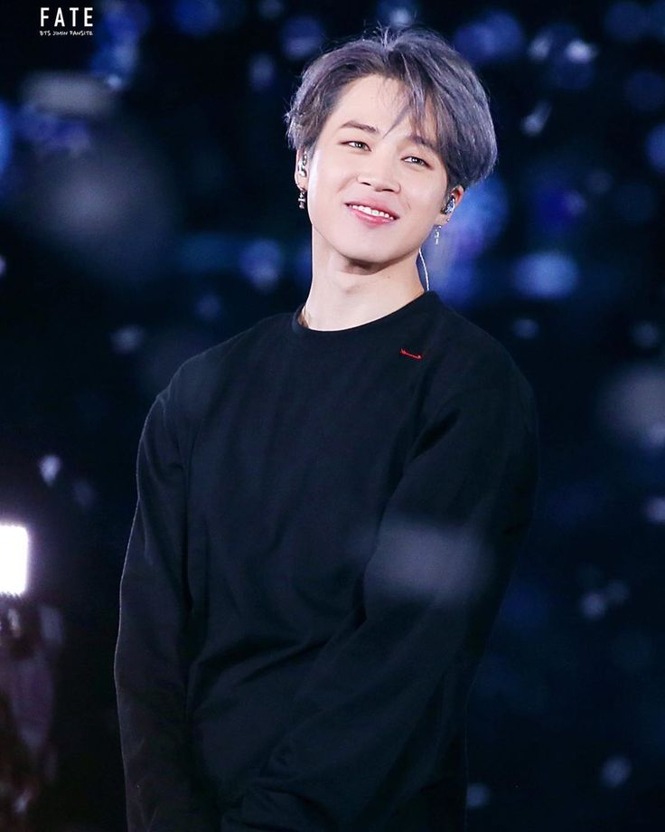
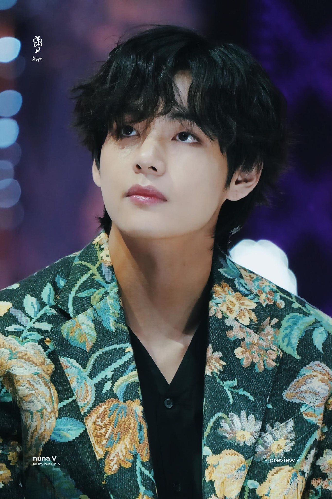

BTS
JIN
Kim Seok-jin nació el 4 de diciembre de 1992, conocido por su nombre artístico Jin, es un cantante, actor, modelo, presentador, compositor y bailarín surcoreano. En el grupo ocupa el puesto de vocalista, bailarín y visual desde 2013. Jin ha coescrito y lanzado tres canciones en solitario con BTS: «Awake» (2016), «Epiphany» (2018) y «Moon» (2020) y todas han entrado en la lista digital Gaon de Corea del Sur. También apareció en la banda sonora del drama Hwarang (2016) junto a su compañero de grupo V. Por otro lado, Jin ha recibido elogios de los críticos por su falsete y su rango emocional como cantante.
Además de cantar, Kim ha participado como presentador en varios programas de música de Corea del Sur entre 2016 y 2018. En 2018 recibió la Orden al Mérito Cultural por parte del presidente surcoreano, junto a otros miembros de BTS, por su contribución a la cultura coreana.
RM
Kim Nam-joon nació el 12 de septiembre de 1994), más conocido por su nombre artístico RM, es un rapero, compositor y productor surcoreano. Es el líder del grupo BTS. En 2015, lanzó su primer mixtape 'RM'. RM tiene muchos logros académicos notables. Alcanzó un 850 en el TOEIC cuando estaba en secundaria, probablemente debido por haber estudiado en Nueva Zelanda. También estuvo en el top 1.3% de la nación en los exámenes de entrada a la universidad en lengua, matemática, idiomas extranjeros y ciencias sociales; además, tiene un CI de 148. Además de su lengua materna, habla fluidamente inglés y japonés, ya que continuó estudiando japonés luego del debut de BTS, ya que todos los miembros de Big Hit reciben clases básicas de dicho idioma. También vio múltiples veces el sitcom estadounidense Friends para ayudarle a aprender inglés.
SUGA
Min Yoon-Gi nació el 9 de marzo de 1993, más conocido por sus nombres artísticos SUGA y Agust D, es un rapero, compositor, productor, cantante, modelo y bailarín surcoreano. En 2013 debutó como miembro del grupo BTS bajo la compañía Big Hit Music. En 2010, formaba parte de un grupo underground de rap en su ciudad natal llamado D-Town. Comenzó su notoriedad con el grupo BTS en 2013, bajo la compañía Big Hit Music. El 15 de agosto de 2016 publicó su primer mixtape debut en solitario titulado Agust D, del cual salieron dos vídeos musicales para los temas «Agust D» y «Give it to Me». Su canción en solitario más reproducida es «Daechwita». Tiene más de 100 canciones acreditadas a su nombre por la Korea Music Copyright Association (KOMCA).
J-HOPE
Jung Ho-Seok nació el 18 de febrero de 1994, más conocido por su nombre artístico J-Hope es un rapero, compositor, cantante, bailarín, coreógrafo y productor surcoreano. En 2013 debutó como miembro del grupo BTS bajo la compañía Big Hit Music. J-Hope lanzó su primer mixtape, Hope World, el 2 de marzo de 2018. El 27 de septiembre de 2019 publicó la canción «Chicken Noodle Soup», que contó con la participación de la cantante estadounidense Becky G. El tema ocupó el puesto 81 en la Billboard Hot 100, lo que lo convirtió en el primer integrante de BTS en entrar en la lista como solista. El 15 de julio de 2022, se lanzó su álbum debut en solitario Jack in the Box, fue precedido por el sencillo principal "More" el 1 de julio. J-Hope hizo su debut en solitario en el festival de Lollapalooza el 31 de julio. Es el primer artista surcoreano en encabezar un escenario principal en un importante festival de música de los Estados Unidos.

JIMIN
Park Ji-Min nació el 13 de octubre de 1995, más conocido como Jimin, es un cantante, compositor, bailarín y modelo surcoreano. En 2013 debutó como integrante del grupo BTS bajo la compañía Big Hit Music. El 30 de diciembre de 2018 publicó su primer tema en solitario, «Promise», en la página de SoundCloud de BTS. El 3 de enero de 2019, la plataforma anunció que «Promise» había superado el récord de la canción más reproducida en 24 horas tras su lanzamiento. Jimin la compuso junto con Slow Rabbit, quien también la produjo, y escribió la letra con su compañero de BTS, RM. El 24 de diciembre de 2020 publicó «Christmas Love», que trata sobre los recuerdos de su infancia durante las festividades de Navidad. En 2022, Jimin participó en la banda sonora del drama Our Blues con «With You», un dueto con Ha Sung-woon, que se lanzó el 24 de abril.

V
Kim Tae-Hyung nació el 30 de diciembre de 1995, más conocido por su nombre artístico V, es un cantante, compositor, bailarín, modelo, presentador y actor surcoreano. Es miembro del grupo BTS bajo la compañía Big Hit Music. El 4 de febrero de 2016, V apareció junto a Kim Min Jae en el programa Celebrity Bromance. En el mismo mes, V realizó su debut como actor en el drama histórico Hwarang y colaboró en la banda sonora de la serie con el tema «It's Definitely You», que también contó con la participación de su compañero de grupo Jin. El 8 de junio de 2017 publicó la canción «4 O'Clock», que produjo con RM para celebrar el cuarto aniversario de BTS. V lanzó su primera canción como solista, «Scenery», el 30 de enero de 2019 a través de la cuenta de SoundCloud de BTS. Siete meses después publicó su segunda canción, y primera totalmente en inglés, titulada «Winter Bear» mediante Soundcloud.
JUNGKOOK
Jeon Jung-kook nació el 1 de septiembre de 1997, conocido como Jungkook, es un cantante y bailarín surcoreano. En 2013 debutó como integrante del grupo BTS bajo la compañía Big Hit Music. En septiembre de 2015, Jungkook participó en la campaña «One Dream One Korea» e interpretó una canción en colaboración con varios artistas coreanos en memoria de la Guerra de Corea. El tema se lanzó el 24 de septiembre y se presentó en el concierto One K Concert en Seúl el 15 de octubre del mismo año.El 4 de junio de 2020 publicó la canción «Still With You» en la plataforma SoundCloud como parte de la celebración anual por el debut de BTS. También colaboró con el artista estadounidense Charlie Puth y dió la ceremonia de apertura en el Mundial de Qatar.